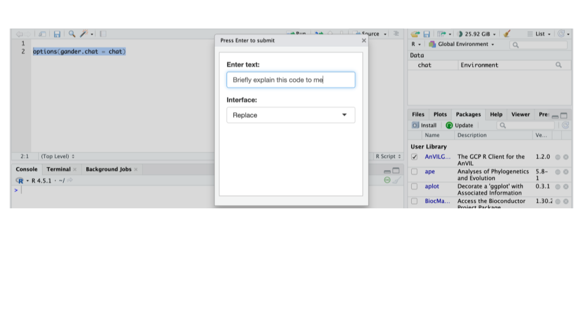
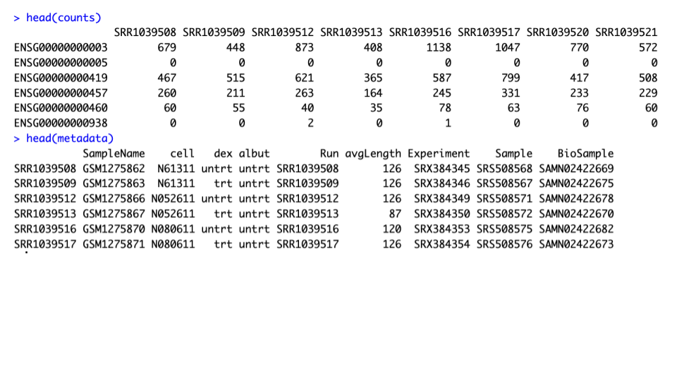
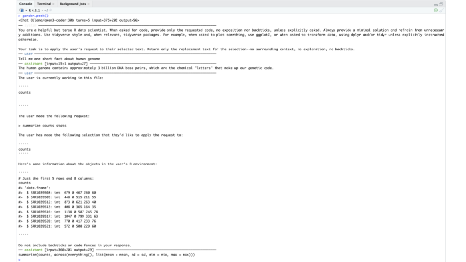

Chapter 3 Explore data with gander
Simplifying your data exploration with Local AI, gander and Tidyverse in RStudio
3.1 Learning Objectives
- Configure gander package with a local AI model and create a keyboard shortcut in RStudio
- Import genomics datasets from Google Cloud Storage into your AnVIL workspace and load onto RStudio
- Explore the count matrix and sample metadata with gander and tidyverse
3.2 Configure gander
All commands in this section must be executed in the R Console (not inside Terminal).
3.2.2 Configure gander’s chat model
To connect the gander package to your local Ollama server running the AI model, set the default option to your chat connection:
3.2.3 Setup keyboard shortcut for gander
Setting a keyboard shortcut allows you to invoke gander instantly inside your code editor without manually typing console commands.
Create a gander shortcut:
- In RStudio: Navigate to Tools → Modify Keyboard Shortcuts
- Search for “gander”
- Assign a convenient shortcut: Shift+Cmd+g (macOS)
3.2.4 Test gander shortcut
Your RStudio session now has an AI research partner that lives on your AnVIL instance. Let’s put it to work. Instead of jumping back and forth to an external browser chat window, gander reads your active code context and environment variables directly inside the IDE.
How to use gander shortcut:
In a clean R Script:
Highlight - an object to query (or word, a sentence, code or an empty space).
Evoke gander - using your pre-set shortcut Shift+Cmd+g.
Enter a prompt - a short, concrete instruction of what you want to do in plain language.
Review output
- Ask AI a question via gander shortcut. In a clean R Script:
Highlight:
options(gander.chat = chat)Evoke gander shortcut: Shift+Cmd+g
Enter text prompt: “Briefly explain this code for me”
Review the output - e.g. output code before running the generated code

Sample gander output:
This code sets a global option in R that tells the gander package which chat object to use for interactive AI assistance.
The gander package is designed to help with data analysis by providing AI-powered insights and explanations.
By setting options(gander.chat = chat), you're connecting gander to an existing chat session (likely initialized with a language model provider like OpenAI or Ollama) so that when you run gander commands, they can use this pre-established chat connection for communication with the language model.Interface Options:
Choosing Replace means that the output will replace your highlighted text.
Other options include Prefix (placed before your highlighted text) or Suffix (placed after your highlighted text.)
3.2.5 Quiz
- What is the primary benefit of using
ganderover a standard web-based AI chat window?
A. It automatically uploads all of your local workspace files to a public cloud server for global sharing.
B. It brings the AI assistant directly into your IDE workflow, allowing it to seamlessly evaluate your local R objects and script context without manual copy-pasting.
C. It forces Ollama to bypass your CPU entirely and store 100% of large models within standard RAM.
D. It permanently replaces the R Console with an automated script executor that runs code without user supervision.
Correct Answer: B (gander is built specifically for data scientists to reduce friction by integrating AI into RStudio. Because it links with packages like ellmer and your local session, it can automatically detect your active R environment objects and surrounding code context.)
- Why would you want to keep your script lean and open a new .R script containing only the necessary code when asking Gander for help?
A. To automatically install missing Bioconductor package dependencies.
B. To prevent background code clutter from sending unrelated context and confusing the assistant.
C. To permanently save your workspace environment variables to disk.
D. To ensure your API key remains hidden from the R console history.
Correct Answer: B (A long script sends a pile of unrelated code, adding unnecessary context noise).
- What happens if you forget to run the command “options(gander.chat = chat)” before trying to use gander in RStudio?
A. The keyboard shortcut will open a web browser to a public AI chat window instead.
B. gander won’t know where to send your prompts, similar to having a phone plugged in without dialing a number.
C. R will throw a syntax error and automatically shut down the background Ollama server.
D. The package will default to using a slower cloud-based model via the internet.
Correct Answer: B (Running options(gander.chat = chat) connects the gander package directly to your local Ollama chat connection. Without it, gander has no designated target for your prompts, meaning it cannot route your questions to your local AI model.
- After leaving your RStudio session open on AnVIL, you step away and it automatically terminates after 30 minutes of inactivity. When you return the next day and resume working without having manually shut anything down, you run your script and encounter this error: “Error in chat_ollama(…) : could not find function”chat_ollama”
A. The Ollama background server process stopped overnight, uninstalling all R packages from the container.
B. The container restarted due to the inactivity timeout, meaning the R session started fresh and the ellmer package (containing chat_ollama) was no longer loaded.
C. RStudio restored a saved workspace from yesterday, which preserved your environment variables but uninstalled all packages.
D. The Sys.getenv() function timed out and corrupted the local R environment’s function namespace.
Correct Answer: B (The container restarted due to the inactivity timeout, meaning the R session started fresh and the ellmer package containing chat_ollama was no longer loaded in memory.)
3.3 Import Data
3.3.2 Import data from Google Cloud Storage
There are many ways to bring in data into RStudio on AnVIL. On ways to bring, import or access data on AnVIL see Data on AnVIL webbook.
Here, we will bring in data from the existing Google bucket associated with an AnVIL workspace.
- Copy the
airwaydataset files (counts and metadata) from an AnVIL workspace bucket:
gcloud_storage( "cp gs://fc-493d543d-3286-48ad-aeec-0bcb84b06fe5/airwaycounts.csv . " )
gcloud_storage( "cp gs://fc-493d543d-3286-48ad-aeec-0bcb84b06fe5/sample_metadata.csv . " )- In the RStudio ‘Files’ pane (bottom-right), confirm that airwaycounts.csv and sample_metadata.csv are now present in your working directory.
3.3.3 Load Data into R
- Load counts and metadata into R
counts <- read.csv("airwaycounts.csv", row.names = 1, check.names = FALSE)
metadata <- read.csv("sample_metadata.csv", row.names = 1 )We load these files in this way to meet the formatting required by DESeq2 later on, ensuring the count matrix file is compatible with the metadata file:
- row.names = 1 (Counts): Sets the first column of the counts file (Ensembl IDs) as the row names.
- check.names = FALSE (Counts): Prevents R from altering sample names by default (e.g., converting characters like dashes into dots.)
- row.names = 1 (Metadata): Sets the first column of the metadata file (sample IDs) as the row names.
- Inspect your files manually in Console

3.3.4 Quiz
- Which package moves files between the workspace bucket and the RStudio instance?
A. DESeq2
B. gander
C. AnVILGCP
D. ellmer
Correct Answer: C (AnVILGCP package, a core AnVIL package, provides specialized functions like gsutil_cp() to coordinate data transfers from Google bucket and the persistent disk of an RStudio environment)
- In the command
gcloud_storage( "cp gs://fc-493d543d-3286-48ad-aeec-0bcb84b06fe5/airwaycounts.csv . " ), what is the correct prefix required to specify the Google Cloud Storage bucket path?
A. cp
B. gs://
C. fc-
D. .
Correct Answer: B (the prefix gs:// is required by Google Cloud utilities to recognize and access a cloud storage bucket. Following the gs://, the fc-493d543d-…string represents your unique workspace project ID/bucket name, while cp is the copy command itself, and ‘.’ represents the local destination directory.)
3.4 Inspect data with gander shortcut
3.4.1 Inspect counts file
- In a clean R Script, highlight the target variable or file name and provide a prompt.
HIGHLIGHT:
countsPROMPT: View counts
sample gander output
Note, gander output may and likely will vary. For example, and alternative output to the same short ‘View counts’ prompt might be simply
- In a clean R Script, highlight the target variable or file name and provide a prompt.
HIGHLIGHT:
countsPROMPT: summarize counts stats
sample gander output
- Use
gander_peek()to check captured context
In the R Console, type gander_peek() to see what gander saw:

Based on the peek output, the assistant captures:
- Active file context: The object or file currently in focus (e.g., counts).
- User request: The explicit prompt provided (e.g., summarize counts stats).
- R environment snapshot: A preview of the object’s structure (e.g., data frame layout).
- Assistant decision: The generated output based on the observed context.
- Ask gander to explain code
Leverage gander to break down unfamiliar logic, functions, or script sections directly within your workflow.
HIGHLIGHT:
summarize(counts, across(everything(), list(mean = mean, sd = sd, min = min, max = max)))PROMPT: Briefly explain this code
sample gander output:
This code calculates summary statistics (mean, standard deviation, minimum, and maximum) for all columns in the counts data frame.
The across(everything()) selects all columns, and list() applies all four summary functions to each column simultaneously, returning a single row with all statistics arranged in columns.3.4.2 Inspect metadata file with gander shortcut
- In a clean R Script, highlight the target variable or file name and provide a prompt.
HIGHLIGHT:
metadataPROMPT: View my metadata file
sample gander output
- In a clean R Script, highlight the target variable or file name and provide a prompt.
HIGHLIGHT:
metadataPROMPT: List all variables in my metadata
sample gander output:
SampleName, cell, dex, albut, Run, avgLength, Experiment, Sample, BioSample3.4.3 Quiz
- When you highlight the object name ‘counts’ in your R script and invoke ‘gander’ with the prompt ‘View counts’, how does gander =generate a meaningful output?
A. It queries a public online database of human genetic sequences via an external API.
B. It resets your R session memory to clear any conflicting variables.
C. It reads your active code context and inspects your local R workspace environment to understand what the counts object contains.
D. It automatically installs and runs the DESeq2 package in the background.
Correct Answer: C (gander leverages Integrated environment context integration, allowing it to inspect active script variables and query your local R environment directly without requiring you to manually copy and paste data into an external chat box.)
3.5 Explore data with gander and tydiverse
3.5.2 Explore counts file with gander and tidyverse
- Inspect counts file. In a clean R Script:
HIGHLIGHT:
countsPROMPT: Explore my counts file with tydiverse
sample gander output:
counts %>%
rownames_to_column(var = "gene") %>%
pivot_longer(cols = -gene, names_to = "sample", values_to = "count") %>%
group_by(sample) %>%
summarize(total_counts = sum(count)) %>%
arrange(desc(total_counts))After running the above code, here is the output:
# A tibble: 8 × 2
sample total_counts
<chr> <int>
1 SRR1039517 30818215
2 SRR1039512 25348649
3 SRR1039516 24448408
4 SRR1039521 21164133
5 SRR1039508 20637971
6 SRR1039520 19126151
7 SRR1039509 18809481
8 SRR1039513 15163415- Ask specific questions. In a clean R Script:
HIGHLIGHT:
countsPROMPT: What is the library size of each sample? Use tidyverse
sample gander output:
counts %>%
summarise_all(sum) %>%
gather(sample, count) %>%
mutate(count = as.numeric(count)) %>%
group_by(sample) %>%
summarise(lib_size = sum(count))- Ask another specific questions. In a clean R Script:
HIGHLIGHT:
countsPROMPT: How many genes (rows) have zero counts across every single sample in the dataset? Use tidyverse
- Ask to explain code line by line. In a clean R Script:
HIGHLIGHT:
PROMPT: Minimally annotate this code line by line
sample gander output:
# Sum rows to get total counts per gene
# Count how many genes have zero expression across all samples
# This gives the number of genes with no expression in any sample3.5.3 Explore metadata file with gander and tidyverse
- Inspect metadata file with tidyverse. In a clean R Script:
HIGHLIGHT:
metadataPROMPT: Explore my metadata file with tydiverse
sample gander output:
metadata %>%
group_by(cell, dex) %>%
summarise(
count = n(),
avg_length = mean(avgLength),
.groups = "drop"
) %>%
arrange(desc(count))After running this code, here is the output:
# A tibble: 8 × 4
cell dex count avg_length
<chr> <chr> <int> <dbl>
1 N052611 trt 1 87
2 N052611 untrt 1 126
3 N061011 trt 1 98
4 N061011 untrt 1 101
5 N080611 trt 1 126
6 N080611 untrt 1 120
7 N61311 trt 1 126
8 N61311 untrt 1 126- Ask a specific question. In a clean R Script:
HIGHLIGHT:
metadataPROMPT: How does avg_length compare between treated and untreated conditions? Use tidyverse
sample gander output:
After running this code, here is the output:
# A tibble: 2 × 2
dex avg_length
<chr> <dbl>
1 trt 109.
2 untrt 118.3.5.4 Quiz
- What is the sequence and best practice when interacting with the AI assistant gander in RStudio?
A. Open a blank script, type your prompt in plain language, and automatically execute the generated code.
B. Open a blank script, highlight a specific object of query, invoke gander with the shortcut, enter a short and concrete prompt, and carefully review the output before running the generated code.
C. Trigger the shortcut first, type a broad multi-task instruction like “do all my RNA-seq analysis,” and let the AI overwrite your workspace files.
D. Skip highlighting any objects, use the shortcut to launch a local Ollama server, and let the model automatically push results to GitHub.
Correct Answer: B (Using gander effectively follows starting with a clean script, highlighting the specific object of interest to provide environment context, invoking the shortcut, supplying a concrete instruction, and reviewing the returned code before execution.)
- When working with tidyverse pipelines in R, what is the primary role of the pipe operator (%>%)?
A. It permanently saves intermediate data frames to the hard drive as CSV files.
B. It forwards the output of one function directly into the first argument of the next function.
C. It connects your local R session to the remote Google Cloud Storage bucket.
D. It automatically installs missing packages like DESeq2 from Bioconductor.
Correct Answer: B (The pipe operator (%>%) chains data operations together by passing the expression on its left-hand side as the primary argument to the function on its right-hand side.)
- When you highlight a snippet of tidyverse code and ask gander to “Minimally annotate this code line by line”, what AI capability is primarily being demonstrated?
A. Natural language code comprehension, allowing the local AI to interpret complex syntax and translate its logic into human-readable comments.
B. Automated neural network model retraining using your live sequencing data.
C. Automatic compilation of R code into high-speed machine learning algorithms.
D. Instantaneous translation of R scripts into Python Pandas syntax.
Correct Answer: A (gander uses the local large language model to parse code syntax and semantics, enabling it to explain, document, or annotate code snippets contextually right inside your environment.)